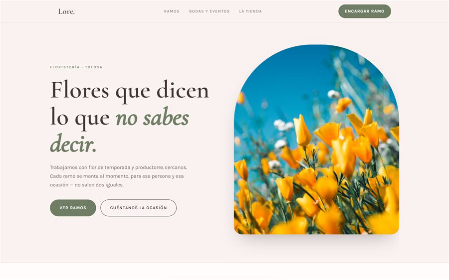

Por qué merece la pena
La razón obvia es el cliente: quien busca en euskera y encuentra una web en euskera se siente en casa desde la primera línea. La menos obvia es Google: las búsquedas en euskera tienen mucha menos competencia. Para "web diseinua Donostia" o "okindegia Tolosa" compiten muchas menos páginas que para sus equivalentes en castellano, así que una web bien hecha en euskera puede aparecer arriba con mucho menos esfuerzo.
Y hay un tercer motivo, más práctico: si trabajas con ayuntamientos, colegios, asociaciones o clientes que funcionan en euskera, una web solo en castellano da una imagen de negocio de fuera aunque lleves treinta años en el pueblo.
Las dos formas de tener una web en dos idiomas
| Método | Cómo funciona | ¿Lo ve Google? |
|---|---|---|
| Botón que traduce | Una sola dirección; al pulsar EU, un script cambia los textos | No — Google solo indexa el idioma que carga primero |
| Páginas propias | Cada idioma tiene su dirección: /eu/, /es/ o similar | Sí — cada versión puede salir en su búsqueda |
| Traductor automático | Un widget traduce la página al vuelo | No — y además traduce mal |
El botón que traduce es cómodo para el visitante, y por eso casi todas las webs baratas lo hacen así. El problema es que para Google tu web solo existe en un idioma. Toda la versión en euskera es invisible: nadie que busque en euskera te va a encontrar.
Lo correcto es que cada idioma tenga su propia dirección. En esta misma web, por ejemplo, la portada en castellano está en oiwebstudio.com y la de euskera en oiwebstudio.com/eu/. El botón ES/EU sigue existiendo, pero lleva de una página a otra en lugar de cambiar textos por debajo.
La etiqueta que conecta las dos versiones: hreflang
Si tienes dos páginas con el mismo contenido en dos idiomas, hay que decirle a Google que son la misma página traducida, no contenido duplicado. Para eso existe la etiqueta hreflang, que va en la cabecera de cada página:
- hreflang="es" apunta a la versión en castellano.
- hreflang="eu" apunta a la versión en euskera.
- hreflang="x-default" dice cuál mostrar si el idioma del buscador no es ninguno de los dos.
Las dos páginas tienen que apuntarse mutuamente; si solo una enlaza a la otra, Google ignora la señal. Es un detalle técnico que el cliente no ve, pero es lo que decide si la versión en euskera aparece en Google o no.

Qué traducir primero (si no puedes con todo)
Traducir una web entera tiene un coste, y no todo pesa lo mismo. Si hay que priorizar, este es el orden:
- La portada y el título de Google. El título y la descripción son lo que se ve en los resultados de búsqueda: son lo primero.
- Horario, dirección y cómo contactar. Lo que busca el que ya ha decidido venir.
- Servicios y precios. Lo que busca el que está comparando.
- Página de contacto y formulario. Un formulario en castellano en mitad de una web en euskera corta el ritmo justo en el momento de convertir.
- Artículos o noticias. Lo último: mejor pocos bien traducidos que muchos a medias.
Una regla que aplico en mi propia web: mejor no tener una página en euskera que tenerla a medias. Una página con la mitad de los textos en castellano da peor imagen que no tenerla.
Errores típicos en webs bilingües
- Traducción automática sin revisar. Se nota enseguida y el euskaldun lo lee como falta de respeto. Si usas un traductor, que lo revise alguien que hable euskera.
- Traducir literalmente los títulos de Google. "Diseño web" no se busca igual que "web diseinua": hay que escribir el título pensando en cómo busca la gente en cada idioma.
- Que el botón de idioma lleve a la portada. Si estás leyendo los precios y cambias a euskera, tienes que seguir en los precios.
- Olvidarse de la ficha de Google. La ficha de Google Business también admite descripción; que esté en los dos idiomas, o al menos que mencione que atiendes en euskera.

"Si tus clientes te hablan en euskera en el mostrador, tu web también debería. Y si no puedes traducirla toda, empieza por la portada y el contacto con páginas de verdad, no con un botón que Google no ve."
¿Quieres tu web en euskera y castellano?
Te digo qué páginas merece la pena traducir en tu caso y cuánto supone, en el presupuesto cerrado.
Preguntas frecuentes
¿Google indexa las webs en euskera?
Sí. Google reconoce el euskera y muestra resultados en euskera a quien busca en euskera. Lo que no indexa es una traducción que se hace con un botón sobre la misma dirección: para eso cada idioma necesita su propia página.
¿Es mejor un botón de idioma o páginas separadas?
Páginas separadas, cada una con su dirección (por ejemplo /eu/), conectadas con la etiqueta hreflang. El botón puede seguir existiendo, pero debe llevar de una página a la otra.
¿Puedo usar el traductor automático para el euskera?
Como borrador, sí; publicarlo sin revisar, no. Los traductores automáticos cometen errores que un euskaldun detecta a la primera, y el título de Google hay que escribirlo pensando en cómo se busca en euskera, no traducirlo.
¿Qué pasa si solo traduzco algunas páginas?
Es perfectamente válido. Traduce primero la portada, el horario y el contacto, y deja el resto en castellano. Lo que no conviene es tener páginas en euskera con la mitad del texto en castellano.
Varios ayuntamientos de Gipuzkoa pagan parte de poner la web en euskera: mira las ayudas abiertas. Sigue leyendo: qué dominio elegir, .eus, .es o .com y cómo aparecer en Google cuando buscan tu negocio en Tolosa. O mira esta misma web en euskera.